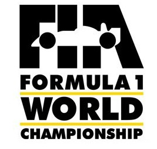
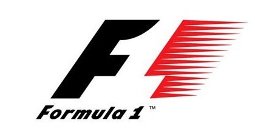

Temporada(s) 2000-2023
2000:
- - En esta decada del deporte se implementó la regla del neumatico único, esta regla consistia en que la mayor parte de la carrera debían usar un solo compuesto de neumaticos
- - Se incluyeron medidas de seguridad mejores como el halo en 2018 y el Coche de Seguridad Virtual en 2015, ademas de mejorar aún mas el sistema de sanciones para que fuera todo mas claro
- - Se cambiaron los sistemas de puntuación en 2003, haciendo que puntuasen hasta un máximo de 8 pilotos, así mas equipos podían optar a los puntos y dejar mas reñida la lucha por los mundiales de pilotos y constructores
- - Implementaron medidas de seguridad como hacer las barreras de los circuitos mas seguras y la obligatoriedad del HANS en las indumentarias de los pilotos a la hora de correr en las sesiones de los grandes premios de Formula 1
2010
- - En 2014, la Formula 1 optó por crear motores con sistemas híbridos, esta apuesta por los sistemas electricos dió paso a lo que se conoce a día de hoy como era híbrida
- - Prohibición de los repostajes en las carreras dado a que el riesgo a incendios por la impaciencia de ganar unas decimas en una parada rápida era demasiado alto, ahora pondrán un máximo de 110kg de combustible y tendrá que llegar al final de la carrera con un minimo de combustible en el tanque para una revisión de pesaje
- - En 2018 y después de varios accidentes como prueba, se aprobó el HALO, una barra de fibra de carbono implementada en el chasis del coche, su objetivo principal es proteger la cabeza y la seguridad del piloto en caso de accidentes, hay varios ejemplos en los que el HALO ha salvado vidas en la pista
- - En el 2010 volvieron a cambiar el sistema de puntuación, ampliando las posiciones de puntos a los 10 primeros de la parrilla haciendo que el total de puntos repartidos por carrera sean 25, en 2019 se permitió un punto extra para la vuelta rápida de carrera que en 2021 se modificó a solo otorgarlo si ese piloto puntuaba en el top 10
Temporada(s)desde 1950-1990
1950:
- - Coches inseguros con posibilidad de incendios en cada accidente
- - Cascos de cuero con gafas de cristal
- - Duraciones de mas de 3h en circuitos en pesimas condiciones durante climas inhumanos para la actividad competitiva
- - Reglas que "favorecieron la competición" que se cobraba entre 2 y 4 vidas cada temporada
1970:
- - Cascos integrales pero de fibra y poco rellenos en el interior, viseras de cristal plastico
- - Quitafuego integrado pero la indumentaria sigue sin ser ignifuga, es decir, que solo protegen del fuego dentro del casco
- - Modelos a medida investigados por los diseñadores, perolos coches se vuelven mucho mas potentes y siguen siendo mortales en caso de un accidente con cierta gravedad
- - Implementación de una limitación del uso de combustible, para fomentar un consumo eficiente de combustible para experimentar cambios en las estrategias de carrera
1980:
- - Implementaciones de la seguridad en los diseños de los coches para que en caso de accidente se proteja al piloto de mejor forma
- - Se implementó el sistema de turboalimentación para el diseño de los motores, consistía en hacer motores mas potentes aún, iniciando la era turbo
- - Se mejoró el apartado aerodinámico de los equipos, esforzandose por crear alerones delanteros y traseros mas sofisticas y capaces de soportar mas carga aerodinámica y tuvieran mas equilibrio
- - Está decada permitió que el deporte del motor consiguiera ser mas internacional de lo que era, ya que ampliaron los circuitos en los que corrían favoreciendo que los fans pudieran sumarse y poder llenar mas los circuitos
1990:
- - Implementaron el límite de peso, este tenía como objetivo que la competición fuera mas justa y mas segura puesto que los coches fueran mas seguros y equilibrados a partes iguales
- - Cambiaron radicalmente la aerodinamica de los coches, poniendo limites en el uso de alerones y difusores excesivamente grandes, lo que afectó al rendimiento del coche
- - En esta decada de competición se inhabilitaron ayudas electricas como el control de tracción y la suspensión, de esta forma veriamos de verdad las habilidades y la experiencia de los pilotos en la pista
- - Hubo innovaciones en el sistema de sanciones, este nuevo sistema de sanciones hacía que si se sancionaba a algún piloto fuera de forma justa con pruebas claras de la o las infracciones que se hayan cometido durante la carrera o por las configuraciones y/o diseño del coche